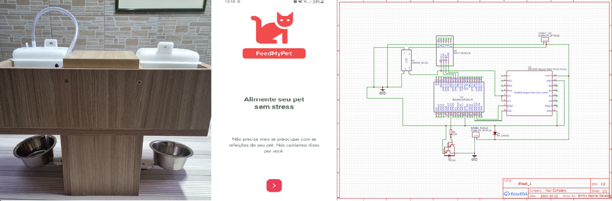

FeedMyPet
During the 2020 pandemic, with people spending more time at home, there was an increase in pet ownership in Brazil. As travel restrictions eased, the need arose to remotely care for pets. To address this, the project aimed to develop an automatic pet feeder with water and food reservoirs, controlled through a native mobile app. Users could register an account, set feeding schedules, and portions for their pets. The project encompassed mechanical design, hardware, firmware, and software development, incorporating 3D printing, MDF material, PCB, ADC module, motor control, water pump activation, Raspberry Pi Zero W, React Native framework for the mobile app, Node.js Express framework for the server, and MongoDB as the database. The final product achieved functionality and demonstrated cost-effectiveness and interdisciplinary learning.
Technologies Used:
- Python: Employed Python for various aspects of the project, including web scraping and data manipulation for obtaining pet-related information, as well as implementing machine learning algorithms for personalized recommendations.
- React Native: Developed the native mobile app for the automatic pet feeder using React Native, enabling users to register accounts, set feeding schedules, and control the device remotely through an intuitive and responsive user interface.
- Node.js: Developed the server-side components of the project using Node.js and Express.js, handling API requests, data processing, and communication with the MongoDB database.
- MongoDB: Utilized MongoDB as the database system to store and manage user account information, feeding schedules, and other relevant data in the automatic pet feeder project.
Functionalities:
The project offers the following functionalities:
- Developed an automatic pet feeder that allows users to set customized feeding schedules and portion sizes for their pets.
- Integrated motor control to accurately dispense the appropriate amount of food at the designated times.
- Implemented a water pump system to provide scheduled hydration for pets.
- Incorporated advanced features such as web scraping and personalized recommendations to enhance the user experience.
- Designed a user-friendly mobile app interface for convenient remote control and monitoring of the pet feeder.